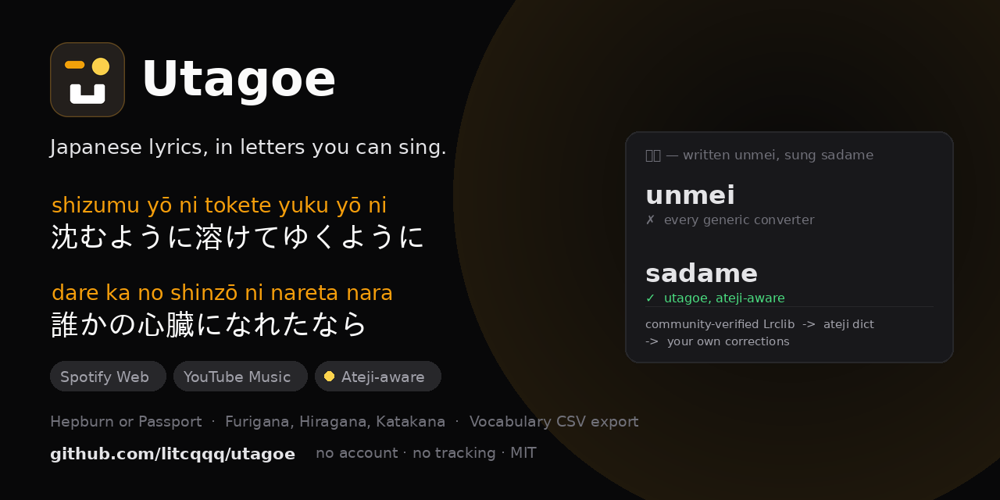

What it actually looks like
Why most Romaji extensions get Japanese lyrics wrong
Because of ateji (当て字). Songwriters routinely write one Kanji and sing a completely different word — 運命 is written unmei but sung sadame; 本気 is written honki but sung maji; 未来 is written mirai but sung asu. A dictionary converter is confidently wrong on all three. Utagoe resolves every line through three layers instead, highest priority first:
- Community-verified lyrics from Lrclib. If a human has uploaded verified Romaji for the track, that wins — it matches what is actually sung.
- The local ateji and particle dictionary. Otherwise Kuroshiro runs on your machine and corrects the Kanji that Japanese composers most often re-read.
- Your own dictionary. Tap any word, type the right reading, and it is stored permanently and always wins.
Features
Stacked two-line display
Romaji sits proportionally above the original line, so the Japanese stays readable.
Four modes
Romaji, furigana ruby, Hiragana, or Katakana — switchable from the popup.
Tap to fix a reading
Every word is addressable. Correct it once, saved forever in your dictionary.
Confidence dots
Each line shows where its reading came from: verified, yours, ateji, or machine guess.
YouTube Music support
The rare Romaji extension that works on both Spotify Web and YouTube Music.
Anki export
One click exports every Kanji word in the song to CSV — word, kana, Romaji, line, song.
Translation mode
Swap each line in place for English, Indonesian, Thai, Chinese, Korean and more.
No account, no tracking
No analytics, no telemetry. The dictionary runs locally; nothing about your listening leaves the machine.
Utagoe vs. other Romaji extensions
| Utagoe | Typical Romaji extension | |
|---|---|---|
| Ateji-aware readings | 3-layer resolution | morphological guess only |
| Source of each reading | colour-coded per line | no signal |
| Fix a wrong reading | tap the word, saved forever | not possible |
| YouTube Music | supported | nearly all are Spotify-only |
| Anki vocabulary export | one-click CSV | none |
| Account, tracking, analytics | none | varies |
Install
No Node.js and no build step. Download the zip from the latest release, unzip it, load it unpacked.
- Download
utagoe-vX.Y.Z.zipfrom the latest release. - Unzip it anywhere.
manifest.jsonshould sit directly inside the folder, not nested one level deeper. - Open
chrome://extensions/(oredge://extensions/). - Turn on Developer mode.
- Click Load unpacked and select the unzipped folder.
- Pin Utagoe from the puzzle-piece menu, then open Spotify Web or YouTube Music and hit Lyrics.
Questions
Does it work on the Spotify desktop or mobile app?
No — Utagoe targets the web players only: open.spotify.com and music.youtube.com in a desktop browser. The desktop client is not a browser extension host.
Do I need Spotify Premium?
No. Free and Premium both show lyrics in the web player, and Utagoe only reads what is already on screen.
Does it need an internet connection?
Only for the Lrclib lookup and translation mode. The Romaji engine and its dictionary are bundled and run locally, so romanization works offline after install.
Why is a reading wrong on one song?
Because ateji is an artistic choice, not a rule — 未来 can be mirai or asu depending on the song. That is exactly why every line carries a confidence dot and every word is tappable.
Does it send my listening data anywhere?
No. No account, no analytics, no telemetry. The only outbound requests are the track title and artist to Lrclib, and lyric text to Google Translate only if you switch to translation mode.
Can I use it in Firefox?
Not yet. The code targets Manifest V3 on Chromium browsers. A Firefox port needs the browser.* namespace and a background.scripts fallback.